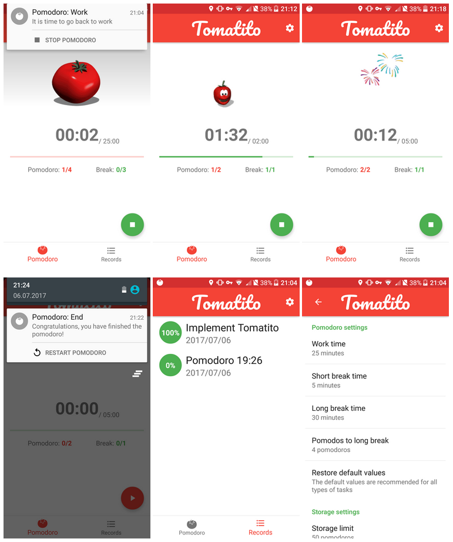

This project consists of a very tiny application for time management according to the pomodoro technique and thus improving productivity.
The Pomodoro Technique is a time management method developed by Francesco Cirillo in the late 1980s. The technique uses a timer to break down work into intervals, traditionally 25 minutes in length, separated by short breaks. These intervals are named pomodoros, the plural in English of the Italian word pomodoro (tomato), after the tomato-shaped kitchen timer that Cirillo used as a university student. [1]
There are six steps in the technique:
- Decide on the task to be done.
- Set the pomodoro timer (25 minutes).
- Work on the task until the timer rings.
- After the timer rings, put a checkmark.
- If you have fewer than four checkmarks, take a short break (3-5 minutes), then go to step 2.
- After four pomodoros, take a longer break (15-30 minutes), reset your checkmark count to zero, then go to step 1.
Motivation
There are several applications on all platforms that are based on this technique. The development of this project is not motivated to occupy a niche market. This project is mainly due to educational reasons. I wanted to try different Android features that I had not yet used and I needed to know before taking my certification exam. This was the perfect excuse to implement a tiny and simple application with my approach of what a pomodoro timer should be.
The specific feature that I had not studied in my course of preparation for the exam and I needed to know was the use of AlarmManager (quoted text from the website about the content of the exam):
You must have knowledge of handling background services and schedule a task using AlarmManager.
I thought it might be interesting to study and use this feature in a real application while reviewing other concepts before going to the exam.
Concept
In my opinion, the characteristics that a pomodoro application must have are:
- It must be very light in terms of the weight of the application and the memory it uses during its execution. Then: no heavy media files and few activities and fragments.
- You must be able to interact with it without having to open the application. Then: use system notifications with actions.
- Make it funny. Then: add animated gifs to the interface.
- Keep a simple record with the latest pomodoros.
- It must have settings to allow user modifying the times of the pomodoro technique.
Implementation
The application has two activities (MainActivity and SettingsActivity) and two services (AlarmService and PomodoroService).
MainActivity is the activity that has got all visual information about pomodoros. Its layout consists mainly in a ViewPager and a BottomNavigationView. The ViewPager could show two fragments (PomodoroFragment and RecordsFragment). PomodoroFragment shows the state of the current pomodoro with a ProgressBar and a text timer. RecordFragment shows the latest pomodoros in a sortered list in a RecyclerView.
SettingsActivity just shows SettingsFragment. It is a standard settings fragment because it extends PreferenceFragment. It has to be careful to perform actions on the current pomodoro if user changes values of the preferences that affects it.
AlarmService is triggered by AlarmManager and it just sends a notification updating the information about current pomodoro state. It uses intent action to resolve the type of the notification. It is important that it reschedule itself if needed.
PomodoroService manages ongoing pomodoro in an asynchronous and safe way. It is needed in order to handle current pomodoro without open application, for example through notification actions. It uses intent action to resolve the operation to perform.
There is an util static class called AlarmUtils that I think that is very important because it contents all the logic to work with AlarmManager. I highlight the following code that ensures correct behaviour in all versions:
if (android.os.Build.VERSION.SDK_INT >= 19) {
manager.setExact(AlarmManager.RTC_WAKEUP, state.stateUtcEndTime, operation);
} else {
manager.set(AlarmManager.RTC_WAKEUP, state.stateUtcEndTime, operation);
}
Persistence
For data storage on the one hand, a traditional SQLite embedded database has been used to save pomodoro records. The definition of this database is located in the Contract class, the creation and update in DbHelper (that extends SQLiteOpenHelper) and the access in DatabaseManager. On the other hand, shared preferences has been used to store user preferences and the current pomodoro start time.
Libraries
The 3rd party software that I have used for the application are:
- Timber: A logger with a small, extensible API which provides utility on top of Android's normal Log class. For example:
Timber.d("Alarm service triggered, action: " + action);
Glide.with(getContext())
.load(R.raw.tomato_working)
.into(mStateGif);
@BindView(R.id.iv_pomodoro_state) ImageView mStateGif;
Conclusion
This application was very easy to implement. I was able to settle learned knowledge and learn some new ones. Coincidentally (I swear this is true), in my certification exam it was necessary to use AlarmManager in order to send a notification at an exact moment of the day, so this training made me feel relaxed and comfortable during the exam and it was a piece of cake.
 Some screenshotsI do not plan to add amazing features in the future, but feel free to contact me to suggest anything or report any bug.
The application is free software (GPLv3) and you can check the whole project in github.